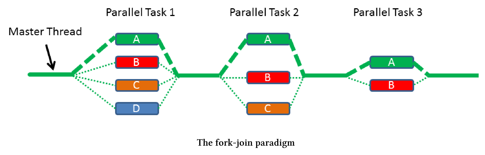

任务块
任务块使用fork-join范型来并行执行任务，其已经是C++扩展并行性2版技术规范的一部分。因此，我们很有可能在C++20中看到它们。
谁在C++中发明了任务块?微软的Parallel Patterns Library (PPL)和英特尔的Threading Building Blocks (TBB)都参与了N4441提案。另外，Intel使用了他们的Cilk Plus语言库。
fork-join这个很容易理解。
Fork和Join
解释fork-join范式最直接的方法是使用图形。

它是如何工作的?
创建者调用define_task_block或define_task_block_restore_thread，此调用会创建一个任务块，该任务块可以创建任务，也可以等待任务完成，同步位于任务块的末尾。创建新任务是fork阶段，任务块的同步是工作流的联接阶段，这只是一个简单的描述。让我们来看一段代码。
定义一个任务块
template <typename Func>
int traverse(node& n, Func &&f){
int left = 0, right = 0;
define_task_block(
[&](task_block& tb){
if (n.left) tb.run([&]{left = traverse(*n.left, f);});
if (n.right) tb.run([&]{right = traverse(*n.right, f);});
}
);
return f(n) + left + right;
}
traverse是一个函数模板，它在树的每个节点上调用函数f。关键字define_task_block定义了任务块，任务块tb可以在任务块中启动一个新任务，这发生在第6行和第7行树的左右分支上。第9行是任务块的末端，因此是同步点。
HPX(高性能ParalleX)
上面的例子来自HPX (High-Performance ParalleX)框架的文档，它是一个通用的C++运行时，适用于任何规模的并行和分布式应用程序。HPX已经实现了许多本章介绍的，即将发布的C++ 20/23标准中的特性。
可以使用define_task_block函数或define_task_block_restore_thread函数定义一个任务块。
define_task_block与define_task_block_restore_thread
区别在于，define_task_block_restore_thread函数保证任务块的创建者线程与任务块完成后运行的线程是相同的，而define_task_block函数则相反。
define_task_block与define_task_block_restore_thread
...
define_task_block([&](auto& tb){
tb.run([&]{[]fun();});
define_task_block_restore_thread([&](auot& tb){
tb.run([&]{[]{func2();});
define_task_block([&](auto& tb){
tb.run([&]{func3();});
});
...
...
});
...
...
});
...
...
任务块确保最外层任务块(第2 - 14行)的创建者线程，与完成任务块后运行语句的线程完全相同。这意味着执行第2行的线程与执行第15和16行的线程相同。这种保证不适用于嵌套的任务块，第6 - 8行任务块的创建者线程不会自动执行第9行和第10行。现在执行第4行的创建者线程与执行第12行和第13行的线程是相同的，如果需要嵌套，则应该使用define_task_block_restore_thread函数(第4行)。
接口
任务块的接口非常有限，不能构造、销毁、复制或移动task_block类的实例。只能对其使用define_task_block函数或define_task_block_restore_thread函数。task_block tb在定义的任务块范围内活动，因此可以启动新任务(tb.run)或等待(tb.wait)直到任务完成。
任务块的最小接口
define_task_block([&](auto& tb){
tb.run([&]{process(x1, x2)});
if(x2==x3) tb.wait();
process(x3, x4);
});
这段代码在做什么呢?第2行启动了一个新任务，这个任务需要数据x1和x2才能进行，第4行使用数据x3和x4。如果x2 == x3为真，则必须保护变量不受共享访问。这就是任务块tb等待第2行任务完成的原因。
如果函数task_block::run或task_block::wait检测到当前任务块中有异常，则会抛出一个类似于task_cancelled_exception的异常。
调度器
调度器管理线程运行，这意味着决定谁执行任务不再是程序开发者的责任。线程只是一个实现细节。
执行新创建的任务有两种策略。父线程表示创建者线程，子线程表示新任务。
窃取子任务：调度程序窃取其任务并执行它。
窃取父任务：现在调度器窃取任务块tb本身执行任务。
提案N4441支持这两种策略。